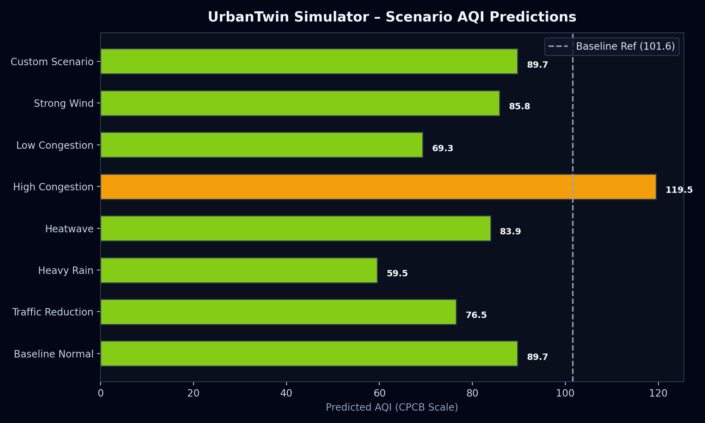
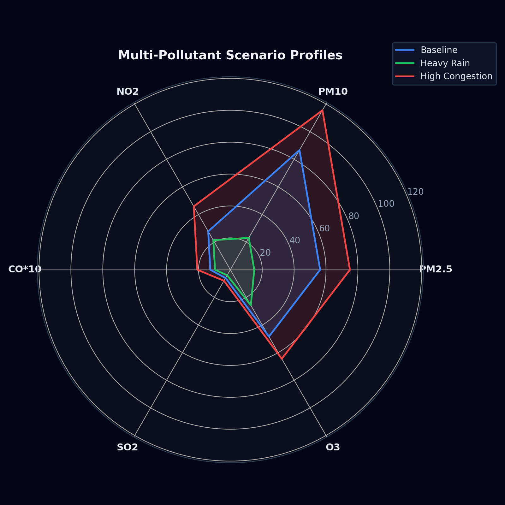

Pune & PCMC Digital Twin Policy Intervention & Environmental Sensitivity Analysis
| Scenario | Category | Predicted AQI | Baseline | Delta | % Change | Category | Confidence |
|---|---|---|---|---|---|---|---|
| Baseline Normal | Baseline | 89.7 | 89.7 | 0.0 | 0.0% | Satisfactory | 70.0% |
| Traffic Reduction | Traffic Policy | 76.5 | 89.7 | -13.2 | -14.7% | Satisfactory | 70.0% |
| Heavy Rain | Environmental | 59.5 | 89.7 | -30.2 | -33.7% | Satisfactory | 70.0% |
| Heatwave | Environmental | 83.9 | 89.7 | -5.8 | -6.5% | Satisfactory | 70.0% |
| High Congestion | Traffic Scenario | 119.5 | 89.7 | +29.8 | +33.2% | Moderate | 70.0% |
| Low Congestion | Traffic Scenario | 69.3 | 89.7 | -20.4 | -22.7% | Satisfactory | 70.0% |
| Strong Wind | Environmental | 85.8 | 89.7 | -3.9 | -4.3% | Satisfactory | 70.0% |
| Custom Scenario | Custom | 89.7 | 89.7 | 0.0 | 0.0% | Satisfactory | 70.0% |

